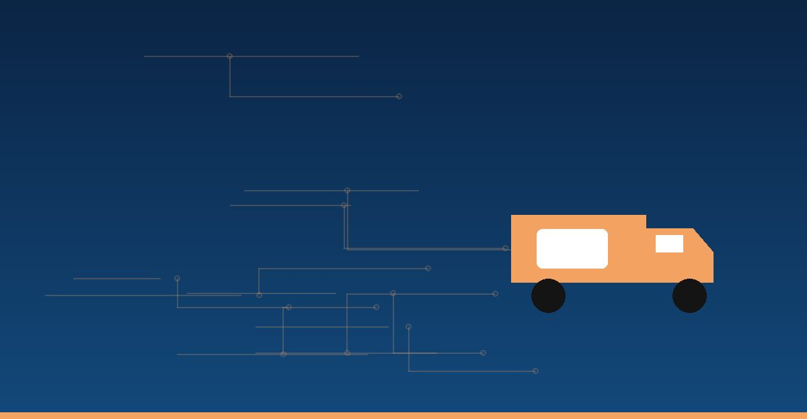

UN 38.3 电池运输测试完整认证指南
任何锂电池要合法运输，都必须先通过 UN 38.3。但很多团队把它当成走流程，直到 T5 或 T8 失败才发现问题。本文逐一讲解八大测试项目、样品数量要求、关键判定标准，以及如何让产品和实验室一次通过认证。

UN 38.3 为什么存在
锂电池内部储存的能量足以在断电后仍维持燃烧，监管机构因此将其列为第9类危险货物——一个内部短路的电芯在货机货舱或集装箱里起火的后果不可接受。UN 38.3 是联合国《试验和标准手册》中规定的八项测试，测试结果通过联合国规章范本进入 IATA DGR（空运）、ADR/IMDG（公路与海运），一次测试即可覆盖所有运输方式。
这些测试刻意施加严酷条件：它们不模拟正常使用，而是模拟包裹可能遭遇的最坏处置——跌落、挤压冲击、极端温度变化、强迫短路。通过测试意味着即使被粗暴对待，电池设计也能把能量约束在壳体之内。
八项测试一览
- T1 高度模拟——在 ≤11.6 kPa 下存放6小时，验证密封电芯在货舱气压下不泄漏。
- T2 热测试——在 -40°C 与 +75°C 之间循环10次，保温30分钟，快速转换。
- T3 振动——7 Hz 至 200 Hz 正弦扫频，每个轴向3小时，模拟运输振动。
- T4 冲击——半正弦脉冲，小电芯150 g、大电池50 g，每个安装方向重复。
- T5 外部短路——在 +57°C 下以低于 0.1 Ω 短接外壳端子；表面温度须稳定在 170°C 以下，6小时内无破裂。
- T6 撞击/挤压——机械滥用：圆柱电芯采用钢棒撞击，方形与软包电芯采用挤压加载。
- T7 过充电——以2倍推荐持续充电电流充电，测试期间及之后7小时内不起火、不爆炸。
- T8 强制放电——电芯反向连接12 V电源并处于高温环境，不得破裂或起火。
测试顺序很重要：T1至T4用同一组样品按顺序进行，且样品在每阶段后必须保持功能——电压与容量在规定范围内。T5至T8各自使用新样品，因为它们本质上是破坏性试验。
样品数量与分组
标准按设计型号规定了样品数量：非破坏性序列通常10只电芯，T5、T6、T8另需电芯，电池级测试还需成品电池。大电池（超过规定的质量与Wh阈值）可采用缩放替代方案。提前规划样品制作，可避免最常见的认证延误——测试进行到一半才发现所需电芯不可用或无法追溯到同一生产批次。
实验室实际需要哪些设备
T1需要能维持 11.6 kPa 六小时并连续记录压力的真空腔。T2需要升温速率快、加载后均匀性达标的高低温试验箱——改装的环境箱很难满足两端30分钟保温的节拍。T3、T4需要振动台及符合标准安装要求的夹具。T5需要经校准的低于 0.1 Ω 短路装置、电芯表面测温仪器，以及能安全容纳泄气电芯的防护罩。T7、T8需要额定电流远超电芯最大电流的充放电设备，同样置于安全腔内。
常态化开展电池测试的实验室，通常围绕专用安全试验箱（含排风管理与远程观察）来整合这些工位，而不是逐项临时搭建防护——审计更快，操作也安全得多。
首次送证的常见失败原因
我们看到的多数失败源于程序问题而非设计缺陷：样品来自不同生产批次，内阻差异使 T5 的温升轨迹不一致；热电偶贴错位置导致热点被低估；夹具过度约束改变了振动响应；而 T8 最容易被低估——部分放电的电芯被强制反向充电时的产热速率远高于完全放电的电芯，因此测试前的荷电状态控制本身就是测试的一部分。
实用准备清单
- ✓所有样品来自单一、可追溯序列号的生产批次。
- ✓热电偶粘贴位置在图纸上先行定义，再交实验室执行。
- ✓确认试验箱与振动夹具的校准证书在有效期内。
- ✓正式测试前先用牺牲样品在内部试跑 T5 和 T8。
- ✓提前与认证机构或货代确认报告格式——事后重做报告要花费数周。